Bài 19: sắp xếp dữ liệu
Bài 19: Sắp xếp dữ liệu
/en/excel/freezing-panes-and-view-options/content/
Giới thiệu
Khi bạn thêm nhiều nội dung vào trang tính, việc sắp xếp thông tin này trở nên đặc biệt quan trọng. Bạn có thể nhanh chóngsắp xếp lạitrang tính bằng cáchsắp xếpdữ liệu của mình. Ví dụ: bạn có thể sắp xếp danh sách thông tin liên hệ theo họ. Nội dung có thể được sắp xếp theo thứ tự bảng chữ cái, số và theo nhiều cách khác.
Hãy xem video bên dưới để tìm hiểu thêm về cách sắp xếp dữ liệu trong Excel.
Các kiểu sắp xếp
Khi sắp xếp dữ liệu, điều quan trọng trước tiên là phải quyết định xem bạn muốn áp dụng sắp xếp chotoàn bộ trang tínhhay chỉ mộtphạm vi ô.
- Sắp xếp trang tínhsắp xếp tất cả dữ liệu trong trang tính của bạn theo một cột. Thông tin liên quan trên mỗi hàng được lưu giữ cùng nhau khi áp dụng sắp xếp. Trong ví dụ bên dưới, cộtTên liên hệ(cộtA) đã được sắp xếp để hiển thị tên theo thứ tự bảng chữ cái.
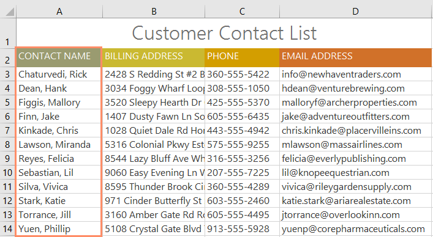
* Sắp xếp phạm visắp xếp dữ liệu trong một phạm vi ô, điều này có thể hữu ích khi làm việc với một trang tính có chứa nhiều bảng. Sắp xếp một phạm vi sẽ không ảnh hưởng đến nội dung khác trong bảng tính.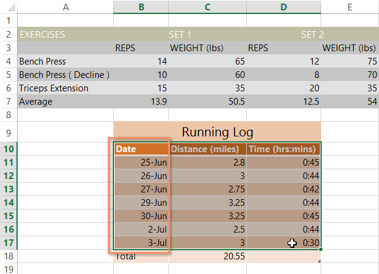
Để sắp xếp một trang tính:
Trong ví dụ của chúng tôi, chúng tôi sẽ sắp xếp mẫu đơn đặt hàng áo phông theo thứ tự bảng chữ cái theoHọ(cộtC).
- Chọn mộtôtrong cột bạn muốn sắp xếp. Trong ví dụ của chúng tôi, chúng tôi sẽ chọn ôC2.
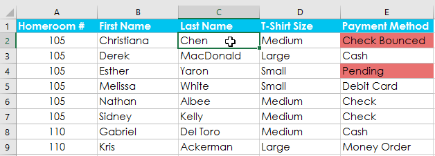
2. Chọn tabDữ liệutrênRibbon, sau đó nhấp vàoLệnh A-Zđể sắp xếp từ A đến Z hoặcLệnh Z-Ađể sắp xếp Z đến A. Trong ví dụ của chúng tôi, chúng tôi sẽ sắp xếp từ A đến Z.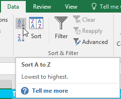
3. Bảng tính sẽ đượcsắp xếptheo cột đã chọn. Trong ví dụ của chúng tôi, trang tính hiện được sắp xếp theohọ.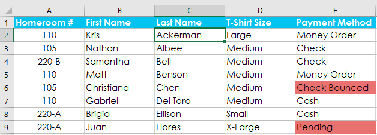
Để sắp xếp một phạm vi:
Trong ví dụ của chúng tôi, chúng tôi sẽ chọn mộtbảng riêngtrong biểu mẫu đặt hàng áo phông để sắp xếp số lượng áo sơ mi được đặt hàng trong mỗi hạng.
- Chọnphạm vi ôbạn muốn sắp xếp. Trong ví dụ của chúng tôi, chúng tôi sẽ chọn phạm vi ôG2:H6.
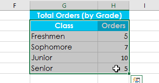
2. Chọn tabDữ liệutrênRibbon, sau đó nhấp vào lệnhSắp xếp.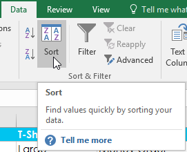
3. Hộp thoạiSắp xếpsẽ xuất hiện. Chọncộtbạn muốn sắp xếp. Trong ví dụ của chúng tôi, chúng tôi muốn sắp xếp dữ liệu theo số lượng đơn đặt hàng áo phông, vì vậy chúng tôi sẽ chọnĐơn hàng.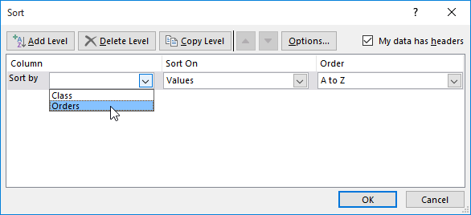
4. Quyết địnhthứ tự sắp xếp(tăng dần hoặc giảm dần). Trong ví dụ của chúng tôi, chúng tôi sẽ sử dụngLớn nhất đến Nhỏ nhất. 5. Khi bạn đã hài lòng với lựa chọn của mình, hãy nhấp vàoOK.6. Phạm vi ô sẽ đượcsắp xếptheo cột đã chọn. Trong ví dụ của chúng tôi, cột Đơn hàng sẽ được sắp xếp từcao nhất đến thấp nhất. Lưu ý rằng nội dung khác trong trang tính không bị ảnh hưởng bởi việc sắp xếp.
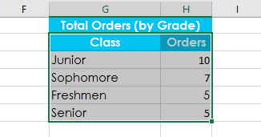
Nếu dữ liệu của bạn không được sắp xếp đúng cách, hãy kiểm tra kỹ các giá trị ô của bạn để đảm bảo chúng được nhập chính xác vào trang tính. Ngay cả một lỗi đánh máy nhỏ cũng có thể gây ra vấn đề khi sắp xếp một bảng tính lớn. Trong ví dụ bên dưới, chúng tôi đã quên thêm dấu gạch nối vào ô A18, khiến cho việc sắp xếp của chúng tôi hơi không chính xác.
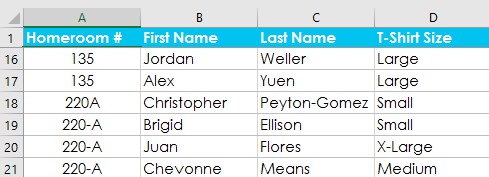
Sắp xếp tùy chỉnh
Đôi khi bạn có thể thấy rằng các tùy chọn sắp xếp mặc định không thể sắp xếp dữ liệu theo thứ tự bạn cần. May mắn thay, Excel cho phép bạn tạodanh sách tùy chỉnhđể xác định thứ tự sắp xếp của riêng bạn.
Để tạo một sắp xếp tùy chỉnh:
Trong ví dụ của chúng tôi, chúng tôi muốn sắp xếp trang tính theoT-Shirt Size(cộtD). Việc sắp xếp thông thường sẽ sắp xếp các kích thước theo thứ tự bảng chữ cái, điều này sẽ không chính xác. Thay vào đó, chúng tôi sẽ tạo một danh sách tùy chỉnh để sắp xếp từ nhỏ nhất đến lớn nhất.
- Chọn mộtôtrong cột bạn muốn sắp xếp. Trong ví dụ của chúng tôi, chúng tôi sẽ chọn ôD2.
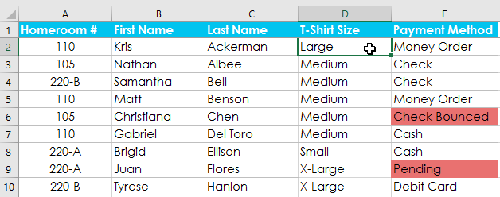
2. Chọn tabDữ liệu, sau đó nhấp vào lệnhSắp xếp.3. Hộp thoạiSắp xếpsẽ xuất hiện. Chọncộtbạn muốn sắp xếp, sau đó chọnDanh sách tùy chỉnh...từ trườngĐơn hàng. Trong ví dụ của chúng tôi, chúng tôi sẽ chọn sắp xếp theoKích thước áo phông.
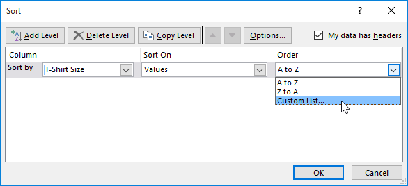
4. Hộp thoạiDanh sách tùy chỉnhsẽ xuất hiện. ChọnDANH SÁCH MỚItừ hộpDanh sách tùy chỉnh:. 5. Nhập các mục theo thứ tự tùy chỉnh mong muốn vào hộpDanh sách mục:. Trong ví dụ của chúng tôi, chúng tôi muốn sắp xếp dữ liệu theo kích thước áo phông từnhỏ nhấtđếnlớn nhất, vì vậy, chúng tôi sẽ nhậpNhỏ,Trung bình,LớnvàX-Large, nhấnEntertrên bàn phím sau mỗi mục.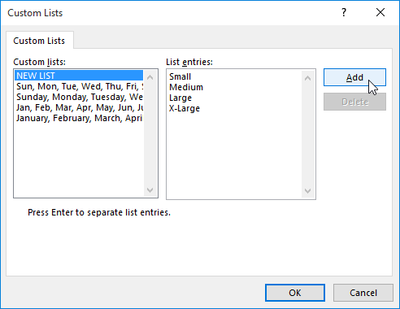
6. Nhấp vàoThêmđể lưu thứ tự sắp xếp mới. Danh sách mới sẽ được thêm vào hộpDanh sách tùy chỉnh:. Đảm bảo danh sách mới đượcchọn, sau đó nhấp vàoOK.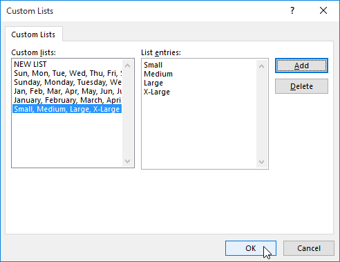
7. Hộp thoạiDanh sách tùy chỉnhsẽ đóng lại. Nhấp vàoOKtrong hộp thoạiSắp xếpđể thực hiện sắp xếp tùy chỉnh.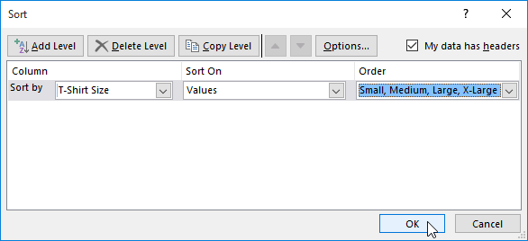
8. Bảng tính sẽ đượcsắp xếptheo thứ tự tùy chỉnh. Trong ví dụ của chúng tôi, bảng tính hiện được sắp xếp theo kích cỡ áo phông từ nhỏ nhất đến lớn nhất.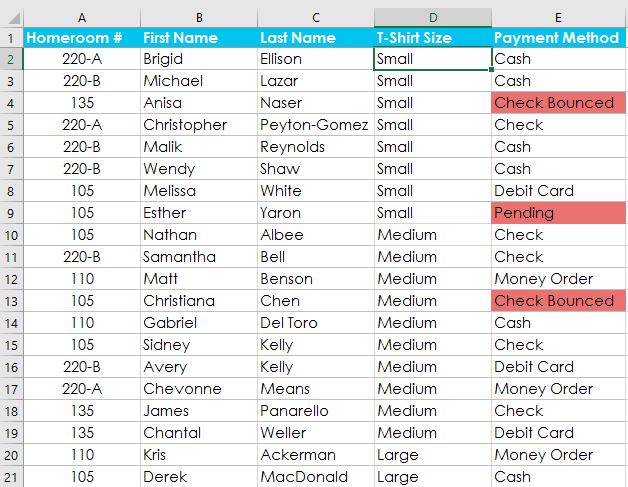
Sắp xếp cấp độ
Nếu cần kiểm soát nhiều hơn cách sắp xếp dữ liệu, bạn có thể thêm nhiềucấpvào bất kỳ cách sắp xếp nào. Điều này cho phép bạn sắp xếp dữ liệu của mình theonhiều hơn mộtcột.
Để thêm một cấp độ:
Trong ví dụ bên dưới, chúng tôi sẽ sắp xếp trang tính theoCỡ áo phông(CộtD), sau đó theoPhòng chủ nhiệm #(cộtA).
- Chọn mộtôtrong cột bạn muốn sắp xếp. Trong ví dụ của chúng tôi, chúng tôi sẽ chọn ôA2.
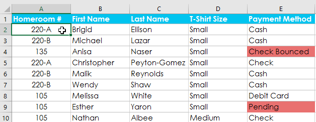
2. Nhấp vào tabDữ liệu, sau đó chọn lệnhSắp xếp.3. Hộp thoạiSắp xếpsẽ xuất hiện. Chọn cột đầu tiên bạn muốn sắp xếp. Trong ví dụ này, chúng tôi sẽ sắp xếp theoKích thước áo phông(cộtD) với danh sách tùy chỉnh mà chúng tôi đã tạo trước đó cho trường Đơn hàng. 4. Nhấp vàoThêm cấp độđể thêm cột khác để sắp xếp.
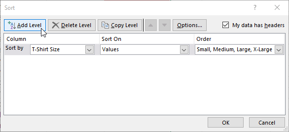
5. Chọn cột tiếp theo bạn muốn sắp xếp, sau đó nhấp vàoOK. Trong ví dụ của chúng tôi, chúng tôi sẽ sắp xếp theoPhòng chủ nhiệm #(cộtA).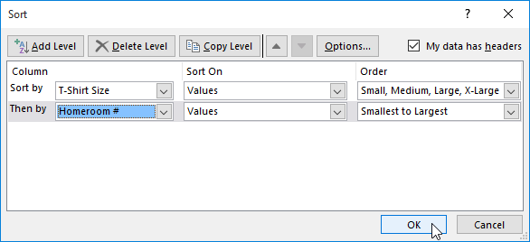
6. Bảng tính sẽ đượcsắp xếptheo thứ tự đã chọn. Trong ví dụ của chúng tôi, các đơn hàng được sắp xếp theo kích cỡ áo phông. Trong mỗi nhóm kích cỡ áo phông, học sinh được sắp xếp theo số phòng chủ nhiệm.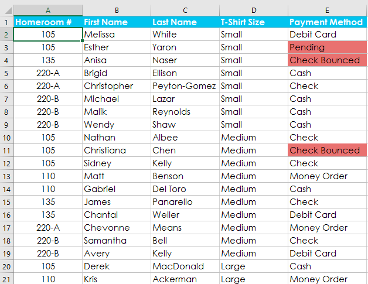
Nếu bạn cần thay đổi thứ tự sắp xếp theo nhiều cấp độ, bạn có thể dễ dàng kiểm soát cột nào được sắp xếp trước. Chỉ cần chọncộtmong muốn, sau đó nhấp vào mũi tênDi chuyển lênhoặcDi chuyển xuốngđể điều chỉnh mức độ ưu tiên của cột đó.
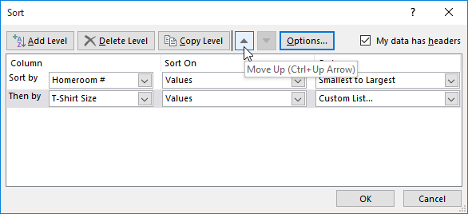
Thử thách!
- Mở sổ làm việc thực hành của chúng tôi.
- Nhấp vào tabThử tháchở phía dưới bên trái của sổ làm việc.
- Đối với bảng chính, hãy tạosắp xếp tùy chỉnhsắp xếp theoCấptừNhỏ nhất đến Lớn nhấtvà sau đó theoTên người cắm trạitừA đến Z.
- Tạo một sắp xếp cho phầnThông tin bổ sung. Sắp xếp theoNgười cố vấn (Cột H)từA đến Z.
- Khi bạn hoàn tất, sổ làm việc của bạn sẽ trông như thế này:

/en/excel/filtering-data/content/